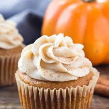

Pumpkin Cheesecake Cupcakes
Pumpkin Cupcakes with a delicious cinnamon-spiced frosting.

Ingredients
- 2 ¼ cups all-purpose flour
- 1 tablespoon baking powder
- 1 teaspoon ground cinnamon
- 1/2 teaspoon ground nutmeg
- 1/2 teaspoon ground ginger
- 1/2 teaspoon ground cloves
- 1/2 teaspoon ground allspice
- 1/2 teaspoon baking soda
- 1/2 teaspoon salt
- 1 cup white sugar
- 1/2 cup butter, softened
- 1/3 cup brown sugar
- 2 large eggs, room temperature
- 1 cup pumpkin puree
- 3/4 cup milk
Cinnamon Cream Cheese Frosting
- 1 (8 ounce) package cream cheese, softened
- 4 cup butter, softened
- 3 cups confectioners' sugar
- 1 teaspoon vanilla extract
- 1 teaspoon ground cinnamon
Directions
- Step 1 Gather the ingredients. Preheat the oven to 375 degrees F (190 degrees C). Grease 24 muffin cups or line cups with paper liners.
- Step 2 To make the pumpkin cupcakes: Sift flour, baking powder, 1 teaspoon cinnamon, nutmeg, ginger, cloves, allspice, baking soda, and salt together in a large bowl; set aside
- Step 3 Beat white sugar, ½ cup butter, and brown sugar together in a large bowl with an electric mixer until light and fluffy. Add eggs one at a time, beating well after each addition. Add pumpkin puree and milk; stir in flour mixture until just combined. Spoon batter into the prepared muffin cups, filling each 3/4 full.
- Step 4 Bake in the preheated oven until tops spring back when lightly pressed, about 25 minutes. Cool in the pans for 5 minutes. Transfer to a wire rack and let cool, about 20 minutes.
- Step 5 To make the frosting: Beat cream cheese and 1/4 cup butter together in a large bowl with an electric mixer until smooth. Beat in confectioners' sugar, a little at a time, until incorporated. Add vanilla extract and 1 teaspoon ground cinnamon; beat until fluffy.
- Step 6 Frost cooled cupcakes